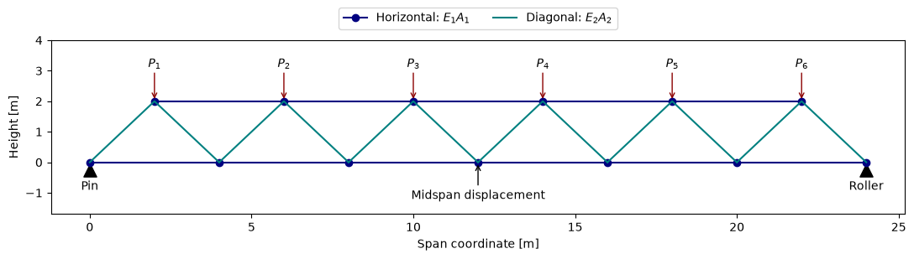

Download notebook · Download runnable bundle
Dependencies: PySTRA core. Helper files: literature_benchmarks.py (included in the bundle).
The 23-bar truss benchmark#
Compare reliability methods on a published structural benchmark using an independently checked mechanical model.
Before you start: the active-learning overview and elementary truss analysis.
Problem and approach#
Marelli and Sudret’s 2018 bootstrap-PCE paper, Section 3.2, compares reliability methods for a truss with uncertain stiffnesses and loads. We reproduce its physical problem, then compare FORM, SORM and a PySTRA adaptive-PCE variant against independent integration. This is a structural assessment example: failure means exceeding a serviceability displacement limit.
The source manuscript gives the geometry in Figure 4, distributions in Table 2 and reliability results in Table 3. The benchmark provenance records algorithm differences and source hashes. Keep the downloadable literature_benchmarks.py helper beside this notebook. Install PySTRA; no external FE solver, UQLab runtime or optional Kriging dependency is needed.
[1]:
import numpy as np
import pandas as pd
import matplotlib.pyplot as plt
from scipy.stats import gumbel_r, norm
import pystra as ra
from pystra.active_learning import (
ActiveLearning,
PCESurrogate,
AllCriteria,
BetaBounds,
BetaStability,
)
from literature_benchmarks import (
truss_model,
truss_deflection,
truss_limit_state,
truss_reference,
hat_model,
hat_limit_state,
hat_reference,
)
Geometry, loads and the limit state#
The simply supported, pin-jointed truss has 13 nodes and 23 bars. Horizontal members share \(E_1A_1\) and diagonals share \(E_2A_2\). Six downward loads act at the upper nodes. The supports are a left pin and a right vertical roller; small-displacement, linear-elastic analysis is assumed.
[2]:
bottom = np.column_stack((np.arange(0, 25, 4), np.zeros(7)))
top = np.column_stack((np.arange(2, 23, 4), np.full(6, 2)))
fig, ax = plt.subplots(figsize=(11, 3.3))
ax.plot(*bottom.T, "o-", color="navy", label="Horizontal: $E_1 A_1$")
ax.plot(*top.T, "o-", color="navy")
for i in range(6):
ax.plot(
[bottom[i, 0], top[i, 0], bottom[i + 1, 0]],
[0, 2, 0],
color="teal",
label="Diagonal: $E_2 A_2$" if i == 0 else None,
)
ax.annotate(
"",
xy=top[i],
xytext=(top[i, 0], 3),
arrowprops={"arrowstyle": "->", "color": "darkred"},
)
ax.text(top[i, 0], 3.1, f"$P_{i + 1}$", ha="center")
ax.scatter([0, 24], [-0.25, -0.25], marker="^", s=120, color="black")
ax.text(0, -0.9, "Pin", ha="center")
ax.text(24, -0.9, "Roller", ha="center")
ax.annotate(
"Midspan displacement",
xy=(12, 0),
xytext=(12, -1.2),
ha="center",
arrowprops={"arrowstyle": "->"},
)
ax.set(xlabel="Span coordinate [m]", ylabel="Height [m]", ylim=(-1.7, 4))
ax.legend(loc="upper center", ncol=2, bbox_to_anchor=(0.5, 1.22))
fig.tight_layout()
plt.show()

Figure. A simply supported 23-bar truss has a pin at the left, a roller at the right and six downward loads. The response is vertical displacement at midspan.
All ten inputs are independent. Parameters below are physical means and standard deviations, not log-space parameters. Gumbel means the maximum-value distribution.
Variables |
Distribution |
Mean |
Standard deviation |
Units |
|---|---|---|---|---|
\(E_1,E_2\) |
Lognormal |
\(2.1\times10^{11}\) |
\(2.1\times10^{10}\) |
Pa |
\(A_1\) |
Lognormal |
\(2\times10^{-3}\) |
\(2\times10^{-4}\) |
m² |
\(A_2\) |
Lognormal |
\(10^{-3}\) |
\(10^{-4}\) |
m² |
\(P_1,\ldots,P_6\) |
Gumbel |
\(5\times10^4\) |
\(7.5\times10^3\) |
N |
For this statically determinate geometry, the unit-load method gives the downward displacement directly:
The coefficients include lengths in metres. The limit state is \(g=0.12-u\) in metres; failure is \(g\leq0\). Tests verify this expression against independently assembled truss stiffness matrices, including each individual load case. The expression is fast enough to make reference integration practical.
[3]:
nominal = [2.1e11, 2.1e11, 2e-3, 1e-3, *([5e4] * 6)]
print(f"Displacement at mean inputs: {1000 * truss_deflection(*nominal):.3f} mm")
model = truss_model()
limit_state = ra.LimitState(truss_limit_state)
Displacement at mean inputs: 77.836 mm
A reference independent of the reliability solvers#
Write \(u=\sum_i c_i P_i\), where \(c_i=h_i/(E_1A_1)+d_i/(E_2A_2)>0\). Conditional on the stiffnesses and five loads,
The two independent stiffness products are lognormal, so only seven random coordinates remain. We average the expression over scrambled Sobol points. Independent scrambles give a standard error for numerical integration, with no surrogate fit or PySTRA transformation involved.
The paper’s Monte Carlo estimate is \(1.52\times10^{-3}\) from \(10^6\) samples. Its approximate binomial standard error is \(3.9\times10^{-5}\); exact agreement with the printed point estimate is not expected.
[4]:
replications = truss_reference(power=19, n_replications=8, seed=2026)
reference = replications.mean()
integration_se = replications.std(ddof=1) / np.sqrt(len(replications))
published_mc = 1.52e-3
published_se = np.sqrt(published_mc * (1 - published_mc) / 1_000_000)
print(f"Conditional integration: {reference:.7f}; replicate SE {integration_se:.2g}")
print(f"Published Monte Carlo: {published_mc:.7f}; approximate SE {published_se:.2g}")
assert abs(reference - published_mc) < 4 * (integration_se + published_se)
Conditional integration: 0.0015180; replicate SE 2.7e-06
Published Monte Carlo: 0.0015200; approximate SE 3.9e-05
FORM and SORM#
Reusing the converged FORM analysis supplies SORM with the same design point. These are local geometric approximations; they do not carry Monte Carlo sampling intervals.
[5]:
form = ra.FORM(model, limit_state)
form_result = form.run()
assert form_result.converged
sorm = ra.SORM(model, limit_state, form=form)
sorm_result = sorm.run()
assert sorm_result.converged
classical = pd.DataFrame(
[
{
"Method": "FORM",
"Published Pf": 0.76e-3,
"PySTRA Pf": form_result.failure_probability,
},
{
"Method": "SORM (Breitung)",
"Published Pf": np.nan,
"PySTRA Pf": float(sorm_result.approximations["breitung"]),
},
{
"Method": "SORM (modified Breitung)",
"Published Pf": 1.63e-3,
"PySTRA Pf": float(sorm_result.approximations["modified_breitung"]),
},
]
).set_index("Method")
classical["PySTRA relative error vs integration"] = (
classical["PySTRA Pf"] / reference - 1
)
classical
[5]:
| Published Pf | PySTRA Pf | PySTRA relative error vs integration | |
|---|---|---|---|
| Method | |||
| FORM | 0.00076 | 0.000757 | -0.501460 |
| SORM (Breitung) | NaN | 0.001519 | 0.000435 |
| SORM (modified Breitung) | 0.00163 | 0.001631 | 0.074279 |
FORM reproduces the paper’s rounded result and substantially underestimates failure probability. Curve-fitting modified Breitung (Hohenbichler–Rackwitz) SORM also matches the published value at its printed precision. The unmodified Breitung formula gives a different approximation. This numerical match does not establish which SORM formula the paper used: the manuscript does not specify it. Stating the formula makes the comparison reproducible.
Adaptive sparse PCE: an explicitly specified variant#
This run uses a normal-coordinate Latin hypercube with 60 initial points, adaptive degree 1–5, q=0.75, at most two interacting variables, bootstrap spread, single-point U enrichment and combined beta-band/beta-stability stopping. The final probability uses 400,000 fresh surrogate classifications.
The paper instead uses 30 initial points sampled uniformly in a ball, degrees 1–10, three-point enrichment, a bootstrap classification stopping criterion and one million Monte Carlo samples. Thus this is a PySTRA variant, not a reproduction of its A-bPCE implementation or a comparison of computational efficiency.
[6]:
seed = 7
analysis = ActiveLearning(
model=truss_model(),
limit_state=ra.LimitState(truss_limit_state),
surrogate=PCESurrogate(
degree=(1, 2, 3, 4, 5), q_norm=0.75, max_interaction=2, seed=seed
),
n_initial=60,
n_candidates=12_000,
n_estimation=400_000,
max_iterations=180,
rng=seed,
stopping_criterion=AllCriteria(
criteria=(
BetaBounds(consecutive=2),
BetaStability(consecutive=2),
)
),
)
result = analysis.run()
print(f"Status: {result.status}; true model evaluations: {result.n_limit_state_evaluations}")
print(f"Selected degree: {analysis.surrogate_model.fit_result.degree}")
print(f"Pf: {result.failure_probability:.7f}; sampling CoV: {result.sampling_cov:.3f}")
print(f"95% interval conditional on the fitted surrogate: {result.sampling_interval}")
assert result.converged
assert abs(result.failure_probability - reference) < (
4 * np.sqrt(reference * (1 - reference) / result.n_estimation) + 0.05 * reference
)
Status: converged; true model evaluations: 222
Selected degree: 5
Pf: 0.0016300; sampling CoV: 0.039
95% interval conditional on the fitted surrogate: (0.0015073593785332592, 0.0017599479391496523)
The final binomial interval describes sampling error on the frozen surrogate. It does not include approximation bias. The paper’s bootstrap bounds and these binomial intervals have different meanings and must not be compared as if they were interchangeable.
[7]:
comparison = pd.DataFrame(
[
{"Estimate": "Paper MC", "Pf": published_mc},
{"Estimate": "Independent integration", "Pf": reference},
{"Estimate": "PySTRA FORM", "Pf": form_result.failure_probability},
{"Estimate": "PySTRA SORM (Breitung)", "Pf": float(sorm_result.approximations["breitung"])},
{
"Estimate": "PySTRA SORM (modified Breitung)",
"Pf": float(sorm_result.approximations["modified_breitung"]),
},
{"Estimate": "Paper A-bPCE", "Pf": 1.48e-3},
{"Estimate": "PySTRA active PCE variant", "Pf": result.failure_probability},
]
).set_index("Estimate")
comparison
[7]:
| Pf | |
|---|---|
| Estimate | |
| Paper MC | 0.001520 |
| Independent integration | 0.001518 |
| PySTRA FORM | 0.000757 |
| PySTRA SORM (Breitung) | 0.001519 |
| PySTRA SORM (modified Breitung) | 0.001631 |
| Paper A-bPCE | 0.001480 |
| PySTRA active PCE variant | 0.001630 |
Check classifications independently#
A close probability can hide false positives cancelled by false negatives. Evaluate the actual physical limit state at fresh independent standard-normal points and compare signs with the fitted surrogate. These validation calls are additional to the learning budget reported above; this is affordable because the truss has an analytical response.
[8]:
points = np.random.default_rng(892).normal(size=(200_000, 10))
# Build physical inputs independently of PySTRA's probability transformation.
variance = np.log1p(0.1**2)
properties = np.exp(
np.log([2.1e11, 2.1e11, 2e-3, 1e-3])
- variance / 2
+ np.sqrt(variance) * points[:, :4]
)
scale = 7.5e3 * np.sqrt(6) / np.pi
loads = gumbel_r.ppf(
norm.cdf(points[:, 4:]), loc=5e4 - np.euler_gamma * scale, scale=scale
)
truth = truss_limit_state(*properties.T, *loads.T) <= 0
prediction = analysis.surrogate_model.predict(points)[0] <= 0
false_negative = np.mean(truth & ~prediction)
false_positive = np.mean(~truth & prediction)
print(f"Missed-failure mass / reference Pf: {false_negative / reference:.2%}")
print(f"False-positive mass / reference Pf: {false_positive / reference:.2%}")
assert false_negative + false_positive < 0.1 * reference
Missed-failure mass / reference Pf: 0.66%
False-positive mass / reference Pf: 0.99%
The regression suite repeats the active analysis with seeds 7, 23 and 101. It checks convergence, probability error with an explicit sampling allowance, classification error and model-evaluation budget. This benchmark can be reused as further reliability algorithms are added; the paper’s physical definition and the independent reference remain fixed.
Interpretation#
Keep mechanical-model verification, probability estimation and surrogate classification checks separate. Include the independent validation cost when budgeting an engineering study.
Continue: User guide · API reference · Theory